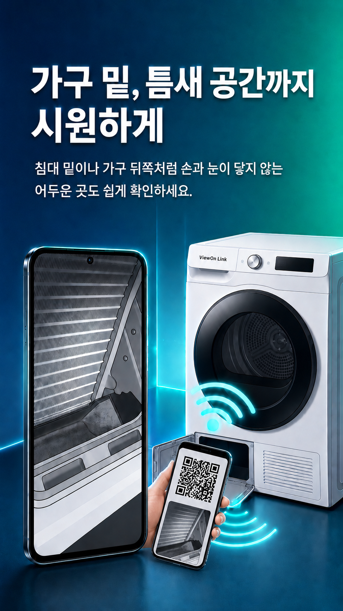
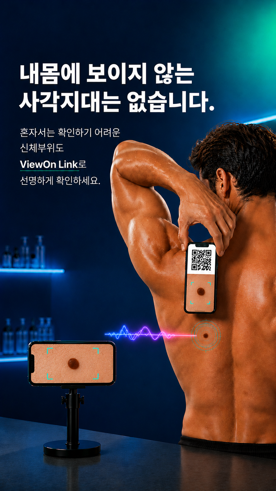

QR 코드로 간편 연결
촬영할 휴대폰에서 QR을 만들고, 확인할 휴대폰에서 스캔하면 바로 연결됩니다.
LOCAL PHONE LINK / QR CONNECT
카메라용 휴대폰과 Viewer용 휴대폰을 연결해 손이 닿지 않는 곳, 혼자 보기 어려운 각도, 작은 글씨까지 실시간으로 확인하세요.
WHY VIEWON LINK
촬영할 휴대폰에서 QR을 만들고, 확인할 휴대폰에서 스캔하면 바로 연결됩니다.
같은 Wi‑Fi 안에서 기기끼리 연결해 더 안심하고 사용할 수 있습니다.
모델명, 시리얼 번호, 전자부품처럼 가까이 봐야 하는 대상을 크게 확인합니다.
필요한 장면은 사진으로 남기고, 어두운 곳은 플래시로 밝혀 확인할 수 있습니다.
USE CASES
허리를 숙이거나 바닥에 눕지 않고 깊숙한 곳을 확인하세요.
침대 밑이나 가전 뒤쪽처럼 손과 눈이 닿지 않는 곳을 봅니다.

거울 없이도 뒤모습과 전체 균형을 실시간으로 확인합니다.
혼자 보기 어려운 어깨선, 뒷주름, 전체 핏까지 확인하세요.

턱선, 구레나룻, 수염 라인을 더 편하게 확인합니다.
혼자 확인하기 어려운 신체 부위도 선명하게 확인할 수 있습니다.
HOW TO USE
촬영할 휴대폰에서 연결용 QR 코드를 생성합니다.
확인할 휴대폰에서 QR 코드를 스캔합니다.
연결 후 화면을 보며 확대, 플래시, 사진 저장 기능을 사용합니다.
VIEWON LINK
보이지 않던 곳까지, 지금 가지고 있는 스마트폰으로 확인하세요.